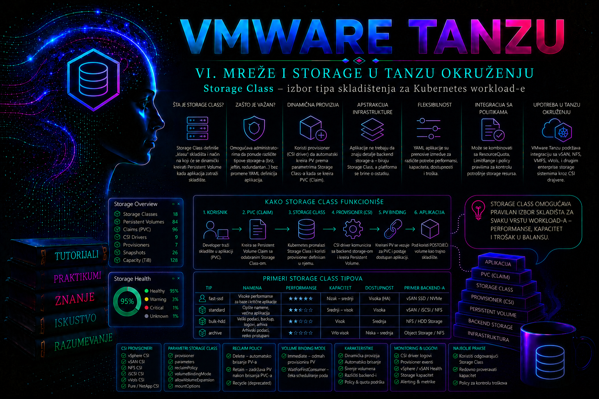

VMware & Tanzu

Uloga StorageClass objekta u Kubernetes arhitekturi
PersistentVolume obezbeđuje trajni kapacitet, a PersistentVolumeClaim predstavlja zahtev aplikacije za tim kapacitetom. StorageClass povezuje zahtev aplikacije sa konkretnim načinom na koji će storage biti obezbeđen. Ona je administratorski ugovor između Kubernetes platforme i storage infrastrukture: definiše koji CSI provisioner izvršava zahtev, koju infrastrukturnu politiku koristi, kada se volumen kreira, da li se može proširiti i šta se događa sa fizičkim volumenom nakon brisanja zahteva.
Bez StorageClass objekta administrator bi veliki broj volumena morao unapred ručno da kreira i registruje kao PersistentVolume objekte. Dinamičko provisioniranje menja taj model. Kada aplikacija kreira PVC sa odgovarajućim nazivom klase, Kubernetes prosleđuje zahtev CSI drajveru. CSI kontroler zatim traži od storage sistema da napravi odgovarajući volumen, registruje ga u Kubernetes-u kao PV i poveže sa PVC objektom.
U vSphere i Tanzu okruženju ova veza se najčešće ostvaruje pomoću vSphere CSI drajvera i vSphere Storage Policy mehanizma. Kubernetes StorageClass može da upućuje na određenu vSphere storage politiku, dok Cloud Native Storage u vCenter-u prati odnos između Kubernetes volumena, PVC objekta, klastera, namespace-a, workload-a i stvarnog virtualnog diska ili file share-a.
StorageClass nije sam storage. Kreiranje klase ne rezerviše kapacitet i ne stvara volumen. Ona opisuje pravila koja će biti primenjena tek kada PVC zatraži skladište. Takođe, naziv klase kao što je gold, silver ili database nema ugrađeno Kubernetes značenje. Platform tim mora precizno da dokumentuje šta naziv predstavlja: tip datastore-a, očekivane performanse, nivo redundanse, backup politiku, dozvoljene access mode vrednosti, cenu i operativnu namenu.
Od zahteva aplikacije do fizičkog volumena
Tipičan tok dinamičkog provisioniranja počinje PVC objektom. PVC navodi traženi kapacitet, access mode i storageClassName. Kubernetes persistent volume kontroler i eksterni CSI provisioner prate novi zahtev. Kada uslovi klase i infrastrukture mogu da se ispune, CSI provisioner kreira backend volumen, a Kubernetes generiše odgovarajući PV.
- Aplikacija ili operator kreira PVC i navodi StorageClass.
- Kubernetes proverava da li klasa postoji i koji provisioner je definisan.
- U zavisnosti od
volumeBindingModevrednosti, provisioniranje počinje odmah ili tek nakon raspoređivanja Pod-a. - CSI drajver prevodi Kubernetes zahtev u operaciju prema storage platformi.
- vSphere CSI koristi odgovarajuću storage politiku i bira kompatibilan datastore.
- Kreira se virtualni disk ili file volume, a CNS evidentira njegov identitet i Kubernetes metapodatke.
- Kubernetes kreira PV, povezuje ga sa PVC objektom i postavlja oba objekta u stanje
Bound. - Kada se Pod rasporedi, CSI komponente obavljaju attach i mount operacije na odgovarajućem worker node-u.
Administrator zato ne proverava samo da li StorageClass postoji. Mora da potvrdi čitav lanac: klasa, provisioner, storage politika, kompatibilan datastore, namespace kvota, CSI kontroleri, mrežna komunikacija sa vCenter-om, mogućnost attach operacije i podrška worker operativnog sistema za traženi filesystem.
Normalno stanje je da PVC nakon kratkog perioda pređe u Bound, da PV ima isti StorageClass, očekivani kapacitet i CSI drajver, a da Pod uspešno montira volumen. PVC koji ostane u stanju Pending nije automatski dokaz nedostatka kapaciteta. Uzrok može biti nepostojeća klasa, nekompatibilna storage politika, nedostupan datastore, iscrpljena kvota, topology ograničenje ili namerno čekanje na prvog potrošača.
Najvažnija polja StorageClass objekta
| Polje | Administratorsko značenje | Produkcioni rizik |
|---|---|---|
provisioner |
Identifikuje CSI drajver koji dinamički kreira volumen. Za vSphere CSI uobičajena vrednost je csi.vsphere.vmware.com. |
Pogrešan ili neinstaliran provisioner ostavlja PVC u stanju Pending. |
parameters |
Sadrži vrednosti specifične za drajver, na primer tačan naziv vSphere Storage Policy objekta. | Pogrešno ime može usmeriti volumen na neželjeni tier ili potpuno onemogućiti provisioniranje. |
reclaimPolicy |
Određuje šta se događa sa dinamički kreiranim PV-om kada se PVC izbriše: Delete ili Retain. |
Delete može ukloniti backend volumen i podatke; Retain može ostaviti neiskorišćene diskove i troškove. |
volumeBindingMode |
Određuje da li se volumen kreira odmah ili tek kada postoji Pod koji ga koristi. | Immediate može izabrati lokaciju koja nije dostupna budućem node-u; pogrešno čekanje se može protumačiti kao kvar. |
allowVolumeExpansion |
Dozvoljava povećavanje zahteva u PVC objektu ako ga CSI drajver i backend podržavaju. | Ne garantuje automatsko smanjivanje niti garantuje da svaki filesystem podržava online proširenje. |
allowedTopologies |
Ograničava zone ili druge topološke segmente u kojima volumen može biti provisioniran. | Nepodudaranje sa node topologijom može ostaviti Pod i PVC neraspoređene. |
| default anotacija | Označava klasu koja se koristi za PVC bez eksplicitnog storageClassName. |
Više podrazumevanih klasa daje nepredvidiv izbor, dok promena podrazumevane klase utiče na buduće zahteve. |
Vrednosti u parameters nisu univerzalne. One zavise od CSI drajvera i njegove verzije. Manifest koji radi sa jednim provisioner-om ne treba kopirati na drugi storage sistem. Administrator pre primene proverava zvaničnu dokumentaciju drajvera, podržane parametre, kompatibilnost sa verzijom Kubernetes-a i ponašanje tokom nadogradnje.
StorageClass i vSphere Storage Policy
U vSphere okruženju StorageClass često predstavlja Kubernetes prikaz vSphere storage politike. Politika opisuje zahteve koje datastore mora da zadovolji, kao što su redundansa, tip skladišta, tag-based placement ili mogućnosti koje pruža vSAN. Kada CSI dobije zahtev, vSphere proverava koji datastore je kompatibilan sa izabranom politikom i na njemu kreira volumen.
Ta veza omogućava da aplikacioni tim bira deklarativnu klasu, dok infrastrukturni tim zadržava kontrolu nad fizičkim smeštajem i pravilima. Razvojni tim ne mora da zna naziv datastore-a niti njegov URL. On bira podržanu uslugu, na primer tanzu-gold-retain, dok administrator održava njeno značenje i kompatibilnost.
U Supervisor okruženju storage politike dodeljene vSphere Namespace-u mogu se prikazati kao StorageClass objekti dostupni workload-ima. U gostujućim Tanzu Kubernetes klasterima način propagacije i upravljanja klasama zavisi od verzije vSphere Supervisor-a, Tanzu Kubernetes Grid servisa i konfiguracije klastera. Platform-managed klasu ne treba ručno menjati ako je kontroler periodično usklađuje sa stanjem definisanim u vCenter-u, jer će ručna promena biti vraćena.
Kod samostalno upravljanih TKG workload klastera sa instaliranim vSphere CSI drajverom administrator može kreirati dodatnu StorageClass definiciju koja koristi postojeću storage politiku. Ne treba menjati podrazumevanu klasu koju je platforma automatski kreirala. Za drugačiji reclaimPolicy, binding režim ili administrativnu namenu kreira se nova klasa sa jedinstvenim imenom.
Promena sadržaja vSphere Storage Policy objekta može uticati na kompatibilnost datastore-a i buduće volumene. Ne treba pretpostaviti da će postojeći volumeni trenutno promeniti performanse ili fizičku lokaciju samo zato što je politika izmenjena. Pre promene proveravaju se policy compliance, podržane mogućnosti migracije i ponašanje postojećih CNS volumena.
U aktuelnoj Broadcom dokumentaciji naziv proizvoda zavisi od generacije platforme: stariji vodiči koriste vSphere with Tanzu i TKG Service, dok noviji koriste vSphere Supervisor, vSphere Kubernetes Service i, u VCF 9 dokumentaciji, vSphere IaaS control plane. Osnovni odnos StorageClass–storage politika ostaje isti, ali postupak objavljivanja klase i skup automatski generisanih klasa nisu identični u svim izdanjima. Zato se pre promene proveravaju tačna vSphere/VCF verzija, Supervisor model, verzija VKS servisa i matrica kompatibilnosti vSphere CSI drajvera.
| Model implementacije | Izvor StorageClass objekta | Ispravna administratorska tačka promene |
|---|---|---|
| Supervisor Namespace | vSphere Storage Policy dodeljena namespace-u automatski se izlaže kao Kubernetes StorageClass; naziv se može normalizovati, uključujući pretvaranje velikih slova u mala. | Politika i njena dodela menjaju se podržanim vSphere/VCF upravljačkim tokom, a ne ručnim patch-ovanjem izvedenog Kubernetes objekta. |
| VKS/TKG Service klaster na Supervisor-u | Dostupne klase i način njihovog prenosa zavise od verzije servisa, Cluster API-ja i politika dodeljenih nadređenom vSphere Namespace-u. | Najpre se proverava platform-managed poreklo klase; korisnička klasa se dodaje samo kada je taj model dokumentovano podržan. |
| Samostalni Kubernetes/TKG sa vSphere CSI drajverom | Platform administrator obično kreira StorageClass manifest i parametrom storagepolicyname upućuje na postojeću vSphere Storage Policy. |
Promena se vodi kroz Git/change proces, uz proveru CSI verzije, privilegija i policy kompatibilnosti. |
Važna posledica za automatizaciju: ne treba pretpostaviti da je Kubernetes naziv klase uvek identičan prikaznom nazivu vSphere politike. U Supervisor okruženju čita se stvarni naziv pomoću kubectl get storageclass, dok se u samostalnom vSphere CSI modelu parametar storagepolicyname mora podudarati sa postojećom politikom koju vCenter može da razreši. Manifest se zato ne prenosi između ova dva modela bez ponovne validacije.
Projektovanje storage politike pre objavljivanja klase
StorageClass ne može da obeća osobinu koju odgovarajuća vSphere politika i kompatibilni datastore-i stvarno ne isporučuju. Pre objavljivanja klase infrastrukturni tim u vSphere Client-u otvara Policies and Profiles > VM Storage Policies, proverava pravila politike i pokreće proveru kompatibilnosti. Za tag-based placement proverava se da li su tag kategorija, tag i dodela datastore-u tačni; za vSAN proveravaju se pravila dostupnosti, tolerancija na otkaze, stripe width, checksum, enkripcija i druge mogućnosti koje konkretna verzija podržava. Stroža politika obično smanjuje skup kompatibilnih datastore-a i može povećati efektivnu potrošnju kapaciteta.
Policy compliance nije jednokratna potvrda pri kreiranju volumena. Datastore može kasnije postati nekompatibilan zbog promene politike, taga, host dostupnosti ili kapaciteta. Out of date ili noncompliant stanje zahteva procenu da li je promenjena željena politika, da li objekt još nije usklađen ili infrastruktura više ne može da ispuni zahtev. Remedijacija ili migracija ne pokreće se naslepo: prvo se utvrđuju aplikacioni RPO/RTO, podržani vSphere postupak, slobodan kapacitet i uticaj na aktivni CNS volumen.
Performanse se ne obećavaju samo nazivom gold. Politika mora imati dokazivu tehničku osnovu, a platform tim objavljuje merljive SLO/SLA granice: očekivanu dostupnost, failure domain, približnu latenciju/IOPS kada ih infrastruktura garantuje, podržani tip volumena, režime pristupa, backup i restore odgovornost. StorageClass bira servis; ona sama ne nameće Kubernetes QoS za I/O niti zamenjuje kapacitetno planiranje.
Binding režim i topološka ispravnost
Immediate pokreće provisioniranje čim se kreira PVC. Ovaj režim je jednostavan kada je storage jednako dostupan svim worker node-ovima i ne postoje značajna zonalna ograničenja. Međutim, u topološki složenom klasteru volumen može biti napravljen u lokaciji koja ne odgovara node-u na koji bi Pod trebalo da bude raspoređen.
WaitForFirstConsumer odlaže izbor i provisioniranje volumena dok scheduler ne uzme u obzir Pod koji koristi PVC. Scheduler tada razmatra node selektore, affinity pravila, taints, tolerations, zone i storage topologiju. Ovaj režim je obično bezbedniji kada datastore-i nisu dostupni svim node-ovima ili kada postoje zone dostupnosti.
Kod klase sa WaitForFirstConsumer PVC bez Pod-a može legitimno ostati u stanju Pending. Događaj kao što je waiting for first consumer to be created before binding predstavlja očekivano ponašanje, a ne grešku. Tek nakon kreiranja Pod-a administrator očekuje početak provisioniranja.
Greška nastaje kada Pod ne može da se rasporedi ni na jedan node koji zadovoljava i compute i storage uslove. Tada treba paralelno analizirati događaje Pod-a i PVC-a. Posmatranje samo jednog objekta često vodi pogrešnom zaključku da je problem isključivo u storage sloju.
Tip volumena, access mode i semantika montaže
StorageClass i PVC moraju zajedno opisati mogućnost koju backend i drajver podržavaju. ReadWriteOnce znači da volumen može biti montiran za čitanje i pisanje sa jednog node-a; ne znači nužno „jedan Pod”, jer više Pod-ova na istom node-u može koristiti isti volumen ako aplikacija i filesystem to bezbedno podnose. ReadWriteOncePod ograničava pristup na jedan Pod, ali zahteva odgovarajuću CSI i Kubernetes podršku. ReadWriteMany tipično zahteva file volume i vSAN File Services ili drugi podržani file backend; običan vSphere blok volumen time ne postaje deljeni filesystem.
Izbor access mode-a nije mehanizam zaštite od konkurentnog upisa na nivou aplikacije. Baza podataka i dalje mora imati sopstvenu kontrolu procesa, zaključavanje i dokumentovan failover. Isto tako, filesystem kao što je ext4 ili xfs nije sam po sebi cluster filesystem. Pre obećanja RWX usluge proveravaju se podržane verzije vSphere CSI drajvera, mrežna dostupnost file servisa, ograničenja topologije, bezbednosni zahtevi i matrica podržanih mogućnosti.
| Zahtev workload-a | Tipično rešenje | Provera pre objavljivanja klase |
|---|---|---|
| Jedan stateful Pod ili više Pod-ova na istom node-u | Blok volumen sa ReadWriteOnce |
Attach granice, podržani filesystem, topologija i ponašanje pri rescheduling-u. |
| Strogo jedan Pod | ReadWriteOncePod, kada ga klaster i CSI sidecar verzije podržavaju |
Feature/version podrška i ponašanje kontrolera tokom failover-a. |
| Istovremeni pristup sa više node-ova | Podržani file volume sa ReadWriteMany |
File Services, mreža, DNS, kapacitet, CSI podrška i aplikaciona semantika zaključavanja. |
Reclaim politika i životni ciklus podataka
Delete je čest izbor za privremena razvojna okruženja i podatke koji se lako ponovo kreiraju. Nakon brisanja PVC-a Kubernetes pokušava da obriše dinamički kreirani PV i pripadajući backend volumen. Ova pogodnost nosi ozbiljan rizik: pogrešno brisanje namespace-a, Helm release-a ili PVC objekta može dovesti do gubitka podataka.
Retain zadržava PV i backend volumen nakon brisanja PVC-a. PV obično prelazi u stanje Released i ne može se automatski dodeliti novom zahtevu dok administrator ne sprovede kontrolisani postupak povrata ili brisanja. Ovaj režim smanjuje rizik od automatskog uništenja podataka, ali zahteva evidenciju vlasništva i redovno otkrivanje napuštenih volumena.
Reclaim politika nije zamena za backup. Retain štiti od jednog tipa automatskog brisanja, ali ne štiti od oštećenja filesystem-a, greške aplikacije, ransomware-a, kvara infrastrukture ili administratorske operacije izvršene direktno u vSphere-u. Backup i restore moraju se projektovati odvojeno.
Za baze podataka i poslovno važne workload-e platform tim često koristi klasu sa Retain, uz aplikaciono konzistentan backup, snapshot politiku i dokumentovan postupak povrata. Za kratkotrajne testove može se koristiti Delete, ali samo kada je vlasnicima aplikacije jasno da brisanje PVC-a može ukloniti i podatke.
Podrazumevana klasa i eksplicitni izbor
Podrazumevana StorageClass koristi se kada PVC ne navede storageClassName. Obeležava se anotacijom storageclass.kubernetes.io/is-default-class: "true". U stabilnom klasteru treba da postoji najviše jedna aktivna podrazumevana klasa.
Za produkcione workload-e eksplicitni izbor klase je sigurniji. Manifest tada jasno beleži očekivani tier i ne menja ponašanje kada platform tim kasnije promeni podrazumevanu klasu. Ovo je posebno važno za StatefulSet, bazu podataka, message broker i druge aplikacije kod kojih performanse i životni ciklus podataka nisu proizvoljni.
PVC sa storageClassName: "" izričito zahteva da se ne koristi StorageClass za dinamičko provisioniranje. Takav zahtev očekuje odgovarajući prethodno kreiran PV. Izostavljeno polje i prazna vrednost nisu isto. Administrator mora da razlikuje ova dva slučaja tokom dijagnostike.
Promena podrazumevane klase utiče prvenstveno na nove ili još neobrađene zahteve koji ne navode klasu. Ona ne migrira već vezane volumene. Pre promene treba pronaći sve aplikacione manifeste koji se oslanjaju na implicitni izbor i proceniti da li će dobiti drugačiju cenu, performanse ili reclaim ponašanje.
Proširenje volumena i ograničenja promene
allowVolumeExpansion: true omogućava da se u PVC objektu poveća vrednost spec.resources.requests.storage. Uspeh zavisi od podrške CSI drajvera, vSphere verzije, tipa volumena, filesystem-a i načina na koji workload koristi disk. Neke kombinacije podržavaju online proširenje, dok druge zahtevaju da volumen nije aktivno montiran.
Smanjivanje PVC kapaciteta nije standardna operacija. Pokušaj postavljanja manje vrednosti biće odbijen. Za smanjivanje je potreban novi manji volumen i kontrolisana migracija podataka, pri čemu administrator mora proveriti iskorišćenost, konzistentnost i rollback mogućnost.
StorageClass nije objekat koji treba proizvoljno menjati nakon što ga koriste workload-i. Brojna polja su nepromenljiva, a promena semantike postojećeg imena predstavlja operativni rizik čak i kada je tehnički moguća. Bezbedniji model je verzionisanje klasa, na primer tanzu-gold-retain-v1 i tanzu-gold-retain-v2, pa zatim kontrolisana migracija aplikacija.
Promena storageClassName postojećeg vezanog PVC-a nije podržan način migracije volumena. Nova klasa se primenjuje stvaranjem novog PVC-a, kopiranjem ili restore-om podataka i preusmeravanjem workload-a. Za stateful aplikacije ovaj postupak zahteva aplikacioni plan, period održavanja i potvrdu vlasnika podataka.
Bezbednost, prava i podela odgovornosti
StorageClass je cluster-scoped objekat. Njeno kreiranje i menjanje ne treba dozvoliti svakom korisniku namespace-a. Platform administrator definiše podržane klase, dok aplikacioni tim dobija pravo da kreira PVC objekte samo u svojim namespace-ovima. Time se sprečava proizvoljno upućivanje na datastore, kreiranje klasa sa opasnim parametrima ili nekontrolisano menjanje podrazumevane politike.
RBAC ograničenje samo po sebi ne rešava potrošnju kapaciteta. Namespace treba da ima ResourceQuota za PVC broj i ukupnu storage potrošnju, a u Supervisor okruženju treba proveriti i storage policy quota mehanizme. Slobodan prostor na datastore-u ne znači da namespace ima pravo da ga koristi.
CSI kredencijali za vCenter ne smeju se navoditi u StorageClass manifestu. Njima upravljaju CSI komponente u zaštićenom sistemskom namespace-u. Aplikacioni korisnik ne treba da ima pristup tim Secret objektima niti dozvolu da menja CSI Deployment, DaemonSet ili konfiguraciju.
Podela odgovornosti mora biti dokumentovana: storage tim održava fizički kapacitet i policy compliance; vSphere tim održava datastore vidljivost, vCenter i CNS; platform tim održava CSI, StorageClass, kvote i Kubernetes validaciju; aplikacioni tim definiše kapacitet, access mode, backup zahteve i bezbedno ponašanje aplikacije tokom prekida.
Najčešće greške i dijagnostički pristup
- Nepostojeći naziv klase. PVC ostaje
Pending, a događaji navode da StorageClass nije pronađen. Proveravaju se velika i mala slova, jer je naziv egzaktan. - Pogrešan naziv vSphere Storage Policy objekta. CSI ne pronalazi kompatibilan placement. Proverava se tačan naziv politike i njena kompatibilnost sa datastore-ovima dostupnim svim relevantnim ESXi hostovima.
- Datastore nije dostupan svim potrebnim hostovima. Provisioniranje ili attach mogu uspeti samo na delu klastera, što dovodi do Pending Pod-ova ili attach grešaka nakon rescheduling-a.
- Iscrpljena kvota. Datastore može imati slobodan prostor, ali namespace ili storage politika nema raspoloživu kvotu. Proveravaju se Kubernetes ResourceQuota i platform-specific quota objekti.
- Pogrešno tumačenje WaitForFirstConsumer režima. PVC bez Pod-a ostaje
Pendingpo dizajnu. Događaji moraju potvrditi da čeka prvog potrošača. - Više podrazumevanih klasa. PVC bez navedene klase može dobiti neželjenu klasu. Pregled anotacija treba da pokaže samo jednu podrazumevanu vrednost.
- Očekivanje da Retain predstavlja backup. Zadržan disk bez dokumentovanog identiteta, aplikacione konzistentnosti i restore testa nije pouzdana zaštita.
- Direktna izmena automatski upravljane klase. Platformski reconciliation može vratiti promenu, pa se kreira nova korisnička klasa ili menja izvorna konfiguracija u podržanom upravljačkom sloju.
Prva dijagnostička komanda nije pregled logova, već kubectl describe pvc. Kubernetes događaji često direktno navode razlog neuspeha. Zatim se proveravaju Pod događaji, StorageClass definicija, PV objekat i CSI komponente. Tek nakon toga se prelazi na detaljne controller i node logove.
Integrisani praktikum: produkciona klasa za poslovne podatke
Poslovni i tehnički kontekst. Platform tim održava Tanzu Kubernetes Grid workload klaster tkg-prod-01 na vSphere infrastrukturi. Finansijska aplikacija koristi namespace fin-data i zahteva dinamički provisioniran blok volumen. Podaci ne smeju automatski nestati ako se PVC slučajno izbriše, volumen mora moći da se proširi, a izbor datastore-a treba da prati postojeću vSphere Storage Policy politiku Tanzu-Gold-Policy.
Cilj. Kreirati klasu tanzu-gold-retain, proveriti dinamičko provisioniranje pomoću PVC-a ledger-data, montirati volumen u Pod ledger-storage-test, dokazati trajnost zapisa nakon rekreiranja Pod-a i sprovesti negativni test sa nepostojećom klasom.
Referentno okruženje. Kubernetes klaster koristi vSphere CSI provisioner csi.vsphere.vmware.com. Postojeća vSphere politika Tanzu-Gold-Policy kompatibilna je sa datastore-om dostupnim svim worker node-ovima. Administratorski radni direktorijum biće /opt/tashizza/storageclass-lab.
Preduslovi i prava. Administrator mora imati pravo za čitanje StorageClass, CSIDriver, PV, node i sistemskih CSI resursa, kao i pravo za kreiranje StorageClass objekta. U namespace-u fin-data potrebna su prava za kreiranje PVC-a, Pod-a i ConfigMap objekta. U vCenter-u je potreban read-only pristup CNS prikazu i storage policy compliance podacima; menjanje datastore-a ili politike nije deo ovog praktikuma.
-
Potvrditi kontekst i početno stanje klastera. Pogrešan kubeconfig ili context može izazvati promenu u drugom klasteru. Komande prikazuju aktivni context, node-ove, registrovane CSI drajvere i postojeće klase.
Validacija: aktivni context mora odgovarati klasterukubectl config current-context kubectl get nodes -o wide kubectl get csidrivers kubectl get storageclass -o widetkg-prod-01, svi očekivani worker node-ovi treba da buduReady, a među CSIDriver objektima mora postojaticsi.vsphere.vmware.com. Ako drajver ne postoji, praktikum se prekida; kreiranje klase ne može nadomestiti neinstaliran CSI. -
Proveriti postojeće podrazumevane klase i CSI komponente. Pre kreiranja nove klase proverava se da li klaster već ima platform-managed objekte i da li postoji samo jedna podrazumevana klasa.
Validacija: CSI controller i node komponente moraju biti u stanjukubectl get storageclass \ -o custom-columns='NAME:.metadata.name,DEFAULT:.metadata.annotations.storageclass\.kubernetes\.io/is-default-class,PROVISIONER:.provisioner,RECLAIM:.reclaimPolicy,BINDING:.volumeBindingMode,EXPAND:.allowVolumeExpansion' kubectl get pods -A -o wide | grep -E 'vsphere-csi|csi-provisioner|csi-attacher|csi-resizer'Running. Nova klasa neće biti označena kao default, pa postojeće ponašanje aplikacija ostaje nepromenjeno. Ako se vide dve klase sa default anotacijom postavljenom natrue, stanje se dokumentuje i eskalira platform timu pre nastavka. -
Proveriti namespace i kvotu. Najpre se read-only komandama proveravaju namespace i postojeća ograničenja.
Validacija: namespace mora postojati i bitikubectl get namespace fin-data kubectl get resourcequota -n fin-data kubectl describe resourcequota -n fin-dataActive. Ako komanda vratiNotFound, namespace se ne kreira implicitno u produkcionom klasteru: najpre se sprovodi odobreni onboarding sa vlasnikom, RBAC-om, kvotama i politikama. Samo u namenskoj laboratoriji ovlašćeni administrator može izvršitikubectl create namespace fin-data. Ako postoji storage kvota, raspoloživi iznos mora biti najmanje 10 GiB za glavni test i dodatni mali negativni zahtev. Kvota se ne povećava bez odobrenja vlasnika kapaciteta. -
Kreirati radni direktorijum i StorageClass manifest. Nova klasa koristi vSphere CSI, postojeću storage politiku,
Retainzaštitu iWaitForFirstConsumerradi topološki ispravnog izbora.
Validacija: server-side dry run mora proći bez greške, a primena mora prijaviti da je objekat kreiran.sudo install -d -m 0750 /opt/tashizza/storageclass-lab sudo chown "$(id -u):$(id -g)" /opt/tashizza/storageclass-lab cd /opt/tashizza/storageclass-lab cat > storageclass-tanzu-gold-retain.yaml <<'EOF' apiVersion: storage.k8s.io/v1 kind: StorageClass metadata: name: tanzu-gold-retain labels: tashizza.example/service-tier: gold tashizza.example/data-lifecycle: retained provisioner: csi.vsphere.vmware.com parameters: storagepolicyname: Tanzu-Gold-Policy reclaimPolicy: Retain allowVolumeExpansion: true volumeBindingMode: WaitForFirstConsumer EOF kubectl apply --dry-run=server -f storageclass-tanzu-gold-retain.yaml kubectl apply -f storageclass-tanzu-gold-retain.yaml
Očekivane vrednosti sukubectl get storageclass tanzu-gold-retain -o yaml kubectl get storageclass tanzu-gold-retain -o jsonpath='{.provisioner}{"\n"}{.parameters.storagepolicyname}{"\n"}{.reclaimPolicy}{"\n"}{.volumeBindingMode}{"\n"}{.allowVolumeExpansion}{"\n"}'csi.vsphere.vmware.com,Tanzu-Gold-Policy,Retain,WaitForFirstConsumeritrue. Klasa ne sme imati default anotaciju. -
Kreirati PVC koji eksplicitno koristi novu klasu. Zahtev traži 10 GiB i
ReadWriteOnce, što je odgovarajuće za blok volumen koji u datom trenutku koristi jedan node.
Validacija: pošto klasa koristicat > ledger-pvc.yaml <<'EOF' apiVersion: v1 kind: PersistentVolumeClaim metadata: name: ledger-data namespace: fin-data labels: app.kubernetes.io/name: ledger app.kubernetes.io/component: storage spec: accessModes: - ReadWriteOnce storageClassName: tanzu-gold-retain resources: requests: storage: 10Gi EOF kubectl apply --dry-run=server -f ledger-pvc.yaml kubectl apply -f ledger-pvc.yaml kubectl get pvc ledger-data -n fin-data kubectl describe pvc ledger-data -n fin-dataWaitForFirstConsumer, očekivano je da PVC trenutno budePending. U događajima treba da postoji poruka da se čeka prvi consumer. To potvrđuje da je zahtev prihvaćen i da odloženo provisioniranje radi po dizajnu. -
Kreirati Pod koji montira PVC i zapisuje kontrolni podatak. Pod koristi bezbednu zamensku test aplikaciju i ne sadrži tajne.
Validacija: praćenje se prekida kombinacijomcat > ledger-storage-test.yaml <<'EOF' apiVersion: v1 kind: Pod metadata: name: ledger-storage-test namespace: fin-data labels: app.kubernetes.io/name: ledger-storage-test spec: securityContext: fsGroup: 1000 fsGroupChangePolicy: OnRootMismatch containers: - name: writer image: busybox:1.36 command: - /bin/sh - -c - | set -eu if [ ! -f /data/acceptance-marker.txt ]; then printf 'storageclass=tanzu-gold-retain\nstatus=initialized\n' > /data/acceptance-marker.txt fi exec sleep 3600 securityContext: runAsNonRoot: true runAsUser: 1000 runAsGroup: 1000 allowPrivilegeEscalation: false capabilities: drop: - ALL volumeMounts: - name: ledger-volume mountPath: /data volumes: - name: ledger-volume persistentVolumeClaim: claimName: ledger-data EOF kubectl apply --dry-run=server -f ledger-storage-test.yaml kubectl apply -f ledger-storage-test.yaml kubectl get pod ledger-storage-test -n fin-data -wCtrl+Ckada Pod postaneRunning. PVC treba da pređe uBound.
Očekuju se vrednostikubectl get pvc ledger-data -n fin-data -o wide kubectl get pod ledger-storage-test -n fin-data -o wide kubectl describe pod ledger-storage-test -n fin-data kubectl exec -n fin-data ledger-storage-test -- cat /data/acceptance-marker.txtstorageclass=tanzu-gold-retainistatus=initialized. Pod događaji ne smeju sadržati aktivneFailedAttachVolumeiliFailedMountgreške. -
Proveriti automatski kreiran PV i CSI identitet. Ime PV-a se dobija iz PVC objekta, čime se izbegava ručno pogađanje naziva.
Validacija: PV mora bitiPV_NAME="$(kubectl get pvc ledger-data -n fin-data -o jsonpath='{.spec.volumeName}')" printf 'PV_NAME=%s\n' "$PV_NAME" kubectl get pv "$PV_NAME" -o wide kubectl get pv "$PV_NAME" -o jsonpath='{.spec.storageClassName}{"\n"}{.spec.persistentVolumeReclaimPolicy}{"\n"}{.spec.csi.driver}{"\n"}{.spec.csi.volumeHandle}{"\n"}' kubectl describe pv "$PV_NAME"Bound, StorageClass mora bititanzu-gold-retain, reclaim politikaRetain, a CSI drivercsi.vsphere.vmware.com.volumeHandlepredstavlja identitet koji se koristi za korelaciju sa CNS prikazom u vCenter-u. U vCenter Cloud Native Storage pregledu volumen treba da bude zdrav, povezan sa odgovarajućim klasterom i da prikazuje očekivanu storage politiku. -
Dokazati trajnost podataka kroz rekreiranje Pod-a. Brisanje Pod-a nije brisanje PVC-a. Novi Pod sa istim imenom koristi isti zahtev i treba da pronađe prethodni zapis.
Validacija: sadržaj mora biti identičan prethodnom rezultatu. PV ime dobijeno iz PVC-a mora ostati isto.kubectl delete pod ledger-storage-test -n fin-data kubectl wait --for=delete pod/ledger-storage-test -n fin-data --timeout=120s kubectl apply -f ledger-storage-test.yaml kubectl wait --for=condition=Ready pod/ledger-storage-test -n fin-data --timeout=300s kubectl exec -n fin-data ledger-storage-test -- cat /data/acceptance-marker.txt
Ako je zapis nestao, administrator proverava da li je aplikacija zaista montirala očekivani PVC, da li je mountPath tačan i da li je došlo do neočekivanog reprovisioniranja.kubectl get pvc ledger-data -n fin-data -o jsonpath='{.spec.volumeName}{"\n"}' -
Sprovesti negativni test sa nepostojećom klasom. Ovaj test pokazuje kako izgleda greška u nazivu klase i kako se razlikuje od legitimnog čekanja na consumer.
Očekivani rezultat: PVC ostajecat > invalid-class-test.yaml <<'EOF' apiVersion: v1 kind: PersistentVolumeClaim metadata: name: invalid-class-test namespace: fin-data spec: accessModes: - ReadWriteOnce storageClassName: tanzu-gold-typo resources: requests: storage: 1Gi EOF kubectl apply -f invalid-class-test.yaml kubectl get pvc invalid-class-test -n fin-data kubectl describe pvc invalid-class-test -n fin-dataPending, ali razlog nije čekanje na prvog potrošača. Događaji treba da pokažu da StorageClasstanzu-gold-typone postoji. Time se potvrđuje da administrator mora tumačiti događaje, a ne samo status.
Validacija cleanup-a: komanda za pregled treba da vratikubectl delete pvc invalid-class-test -n fin-data kubectl get pvc invalid-class-test -n fin-dataNotFound. Pošto provisioniranje nije ni počelo, ne treba da postoji PV za ovaj negativni zahtev. -
Proveriti relevantne logove samo ako postoji problem. Nazivi CSI namespace-a i workload-a razlikuju se između Tanzu modela i verzija, pa se prvo pronalaze stvarni resursi.
Ako PVC ne prelazi ukubectl get pods -A | grep -E 'vsphere-csi|csi-provisioner|csi-attacher|csi-resizer' kubectl get events -n fin-data --sort-by='.lastTimestamp' kubectl get events -A --field-selector type=Warning --sort-by='.lastTimestamp'Bound, pregledaju se logovi provisioner i vSphere CSI controller kontejnera u namespace-u u kome su pronađeni. Ako Pod prijavljuje attach ili mount problem, pregledaju se CSI node komponenta na node-u na kojem je Pod raspoređen i kubelet logovi tog node-a.
Tumačenje: controller logovi služe za provisioniranje, brisanje, proširenje i komunikaciju sa vCenter-om; node logovi za staging, mount i unmount operacije. Na worker node-u sa systemd-om kubelet se obično proverava komandomkubectl logs -n <CSI_NAMESPACE> <CSI_CONTROLLER_POD> -c vsphere-csi-controller --since=15m kubectl logs -n <CSI_NAMESPACE> <CSI_CONTROLLER_POD> -c csi-provisioner --since=15m kubectl logs -n <CSI_NAMESPACE> <CSI_NODE_POD> -c vsphere-csi-node --since=15mjournalctl -u kubelet, ali samo uz odobren administratorski pristup node-u. -
Dokumentovati rollback i cleanup granice. StorageClass ne treba brisati dok postoji PVC ili PV koji je koriste. Za rollback aplikacije na prethodnu klasu potreban je novi PVC i migracija podataka; promena klase postojećeg vezanog PVC-a nije bezbedan prečac.
Upozorenje: ne izvršavatikubectl get pvc -A \ -o custom-columns='NAMESPACE:.metadata.namespace,NAME:.metadata.name,CLASS:.spec.storageClassName,STATUS:.status.phase,VOLUME:.spec.volumeName' \ | grep 'tanzu-gold-retain' || true kubectl get pv \ -o custom-columns='NAME:.metadata.name,CLASS:.spec.storageClassName,STATUS:.status.phase,CLAIM:.spec.claimRef.namespace/.spec.claimRef.name,RECLAIM:.spec.persistentVolumeReclaimPolicy' \ | grep 'tanzu-gold-retain' || truekubectl delete pvc ledger-datakao običan cleanup. Klasa koristiRetain, pa bi PV i backend volumen ostali izdvojeni, a aplikacija izgubila vezu sa zahtevom. Glavni PVC i Pod ostaju aktivni kao prihvaćeni rezultat praktikuma. Kada vlasnik podataka odobri potpuno uklanjanje, redosled obuhvata aplikacioni backup, potvrdu restore testa, zaustavljanje workload-a, evidentiranjevolumeHandlevrednosti, brisanje PVC-a, proveruReleasedPV-a i tek zatim odobreno brisanje ili ponovno preuzimanje volumena.
Merljivi kriterijumi prihvatanja.
- StorageClass
tanzu-gold-retainpostoji i koristi provisionercsi.vsphere.vmware.com. - Klasa upućuje na
Tanzu-Gold-Policy, imaRetain,WaitForFirstConsumeri dozvoljeno proširenje. - PVC
ledger-datajeBoundi zahteva 10 GiB. - PV koristi očekivanu klasu, reclaim politiku i CSI driver.
- Pod
ledger-storage-testjeReadyi može da pročita kontrolni zapis. - Kontrolni zapis ostaje dostupan nakon brisanja i ponovnog kreiranja Pod-a.
- Negativni PVC ostaje
Pendingzbog nepostojeće klase i zatim je uklonjen bez kreiranja PV-a. - U događajima nema aktivnih provision, attach ili mount upozorenja za glavni workload.
- CNS prikaz povezuje volumen sa očekivanim klasterom, namespace-om i storage politikom.
Administratorske prakse
Inventar i vlasništvo StorageClass objekata. Najmanje jednom mesečno i nakon nadogradnje platforme izvršiti kubectl get storageclass -o yaml i sačuvati kontrolisani izvoz u Git repozitorijumu platform konfiguracije. Za svaku klasu dokumentovati vlasnika, CSI provisioner, storage politiku, reclaim ponašanje, podržane access mode vrednosti, expansion podršku i namenjene workload-e. Reakciju zahtevaju klasa bez vlasnika, nepoznat provisioner ili parametar koji ne postoji u odobrenom baseline-u. Uspeh se meri potpunim mapiranjem svih aktivnih klasa na odobrene infrastrukturne politike.
Kontrola podrazumevane klase. Nakon instalacije, nadogradnje ili promene storage dodatka proveriti anotacije komandom kubectl get sc -o custom-columns. Reakciju zahtevaju nula default klasa ako organizacija očekuje implicitno provisioniranje ili više od jedne klase sa vrednošću true. Prva reakcija je zaustavljanje promena koje kreiraju PVC bez eksplicitne klase i utvrđivanje koji kontroler upravlja klasama. Odluka i promena beleže se u change zapisu i platformskom Git repozitorijumu.
Praćenje Pending PVC objekata. Kontinuirani monitoring treba da alarmira kada produkcioni PVC ostane Pending duže od organizaciono definisanog intervala, na primer deset minuta, osim kada odobreni workflow koristi WaitForFirstConsumer bez kreiranog Pod-a. Prva reakcija je kubectl describe pvc, zatim korelacija sa Pod događajima, kvotom i CSI logovima. Dokumentuju se uzrok, pogođeni namespace, StorageClass, vreme oporavka i preduzeta mera. Uspeh se meri smanjenjem neopravdanih Pending zahteva i prosečnog vremena dijagnostike.
Kapacitet i policy compliance. Storage i vSphere tim periodično prate datastore kapacitet, rast CNS volumena, storage policy compliance i neravnomernu potrošnju. Pragovi zavise od organizacije, ali ulazak datastore-a u unapred definisanu upozoravajuću zonu, na primer ispod 20% slobodnog prostora, zahteva plan proširenja ili kontrolisanu redistribuciju. Prva reakcija nije nasumično brisanje PV objekata, već identifikacija vlasnika volumena i provera backup i retention obaveza.
Kontrola Retain volumena. Najmanje nedeljno pregledati PV objekte u stanjima Released i Failed. Svaki zadržani volumen mora imati vlasnika, tiket, datum odluke i plan: ponovno vezivanje, arhiviranje ili odobreno brisanje. Nepoznat Released volumen zahteva zaštitu od brisanja i korelaciju sa CNS identitetom. Uspeh se meri odsustvom volumena bez vlasnika i dokazivim odobrenjem za svaku destruktivnu operaciju.
Backup i probni restore. Čuvaju se aplikaciono konzistentni podaci, Kubernetes manifesti, informacije o StorageClass i PVC objektima i, kada se koristi CSI snapshot zaštita, odgovarajući VolumeSnapshot i VolumeSnapshotClass metapodaci. Učestalost prati RPO aplikacije, a kopija se čuva izvan failure domain-a primarnog datastore-a. Integritet se ne potvrđuje samo statusom backup posla: najmanje kvartalno ili prema kritičnosti radi se probni restore u izolovan namespace, pokreće aplikaciona provera i upoređuju broj zapisa, kontrolni checksum ili drugi poslovni kriterijum. Backup je upotrebljiv tek kada restore ispuni dokumentovani RTO i aplikacija potvrdi konzistentnost.
Kontrola promena. Pre kreiranja nove klase proveravaju se kompatibilnost storage politike, dostupnost datastore-a svim potrebnim hostovima, kvote, podržana CSI verzija i rollback plan. Nakon promene kreira se test PVC i izvršavaju provision, attach, mount i restart provere. Manifest, rezultat testa, CNS identitet i odobrenje čuvaju se u change sistemu. Uspeh se meri time da promena ne utiče na postojeće klase i da test zadovolji sve kriterijume prihvatanja.
Završna kontrolna tačka
Administrator je završio lekciju kada sledeće sposobnosti može da dokaže stvarnim objektima, događajima i CNS podacima, a ne samo opisom postupka:
- Aktivni
kubectlcontext odgovara ciljnom Tanzu klasteru. kubectl get csidriversprikazuje očekivani vSphere CSI drajver.- Tačan naziv vSphere Storage Policy objekta potvrđen je u vCenter-u.
- Politika je kompatibilna sa datastore-om dostupnim svim relevantnim ESXi hostovima.
- StorageClass manifest koristi odobren provisioner i podržane parametre.
- Izabrani
reclaimPolicyodgovara klasifikaciji i životnom ciklusu podataka. volumeBindingModeodgovara storage topologiji klastera.- Postoji najviše jedna podrazumevana StorageClass.
- Namespace kvota omogućava zahtevani kapacitet.
- Test PVC prelazi u očekivano stanje, a događaji ne sadrže neobjašnjena upozorenja.
- Automatski kreiran PV koristi očekivanu klasu, CSI driver i reclaim politiku.
- Pod uspešno montira volumen i čita prethodno zapisane podatke nakon rekreiranja.
- CNS prikaz potvrđuje zdravlje, politiku i identitet volumena.
- Backup i probni restore postupak postoje za poslovno važne podatke.
- Manifest, rezultati validacije, vlasnik klase i rollback postupak evidentirani su u Git i change sistemu.
Zaključak
StorageClass pretvara infrastrukturne mogućnosti u kontrolisanu Kubernetes uslugu. Administrator mora da razume da ona nije samo naziv storage tier-a, već skup odluka o provisioner-u, placement-u, topologiji, proširenju i sudbini podataka. Ispravna klasa omogućava aplikacionim timovima samostalno provisioniranje bez direktnog pristupa datastore infrastrukturi, dok pogrešna klasa može izazvati nedostupnost workload-a, potrošnju pogrešnog tier-a ili gubitak podataka.
Nakon ove lekcije administrator treba da ume da poveže StorageClass sa vSphere Storage Policy objektom, kreira novu klasu bez menjanja platform-managed definicija, proveri odloženo i trenutno binding ponašanje, validira dinamički kreiran PV i koreliše Kubernetes identitet sa CNS volumenom. Takođe treba da razlikuje legitimni Pending status od problema sa nazivom klase, kvotom, topologijom, policy compliance stanjem ili CSI komponentama.
Bezbedna promena zahteva proveru pre implementacije, server-side validaciju manifesta, funkcionalni test provisioniranja i mount-a, dokumentovan rollback i jasno vlasništvo nad podacima. Brisanje PVC-a, PV-a ili backend volumena prevazilazi običnu konfiguracionu promenu i mora biti usklađeno sa vlasnikom aplikacije, backup politikom i change procedurom.
Razlog za eskalaciju postoji kada storage politika nije kompatibilna, datastore nije dostupan svim hostovima, CSI prijavljuje greške komunikacije sa vCenter-om, quota stanje nije usklađeno sa prikazanim kapacitetom, policy-managed objekat vraća ručne promene ili je potreban destruktivan zahvat nad volumenom čije vlasništvo nije dokazano. Odgovornost Kubernetes administratora završava se tamo gde počinju neodobrene infrastrukturne i podatkovne promene; njegova obaveza je da problem precizno identifikuje, sačuva dokaze i uključi odgovarajući storage, vSphere ili aplikacioni tim.